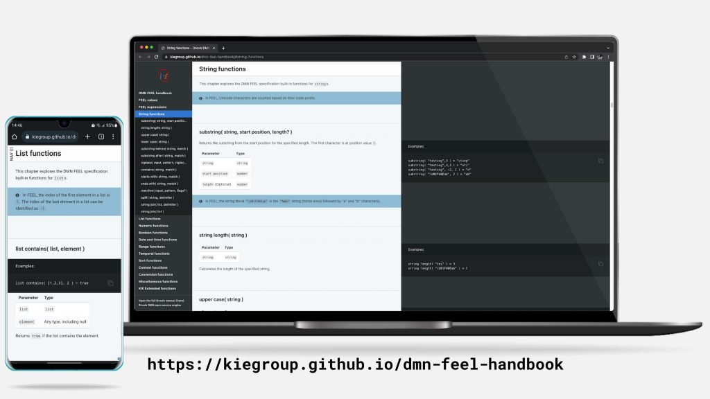

a DMN FEEL handbook
We’re introducing an (experimental) DMN FEEL handbook, an helpful companion for your DMN modeling activities!

You can access this new helpful resource at the following URL: https://kiegroup.github.io/dmn-feel-handbook.
Key features include:
- FEEL built-in functions organised by category
- tested and integrated FEEL examples
- Responsive design: easily access on Mobile, Tablet and Desktop from your favourite browser!
…and many more!
Implementation details
For the technically curious, this section will highlight some of the technical implementation choices for the realisation of this handbook.
If you want to just use this handbook, you are free to skip this section! :)
The framework used to render this handbook is called Slate; it’s very convenient to use it when, in general, you want a neat API documented with use-cases and examples. This makes it a perfect framework candidate to build a technical manual of a very specific aspect –the FEEL expression language of DMN. Naturally we’re keeping Antora for the general documentation of Drools, which is more powerful for the user-manuals and modularising content.
Then, in order to CI the FEEL snippets and examples in the handbook, we’re leveraging the awesome JBang! As you can see in the Java_script source (here) we’re parsing the content of the Markdown file to search for codeblocks related to FEEL. Each codeblock related to FEEL is then evaluated, to make sure it does not error or misbehave.
This allowed us to catch small typos, such as this one which we corrected in the main docs. I got the inspiration to implement this approach by reading the Rust manual. If you are familiar with that book, you will likely recognise where Ferris inspired me :).
Finally, we integrated the JBang! tests with CI with a simple GitHub Action, and then we serve the content via GitHub Pages.
Conclusions
Don’t forget to checkout this DMN FEEL handbook today!
https://kiegroup.github.io/dmn-feel-handbook
Do you like it? Feedback? Let us know!